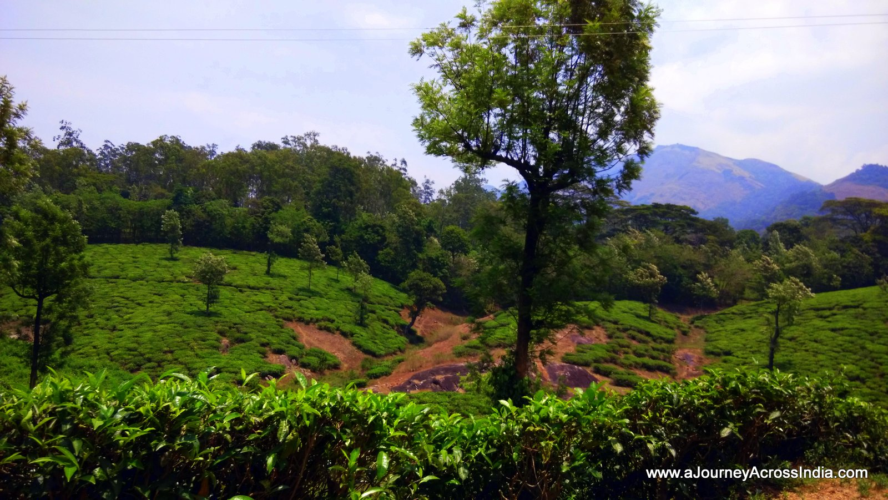
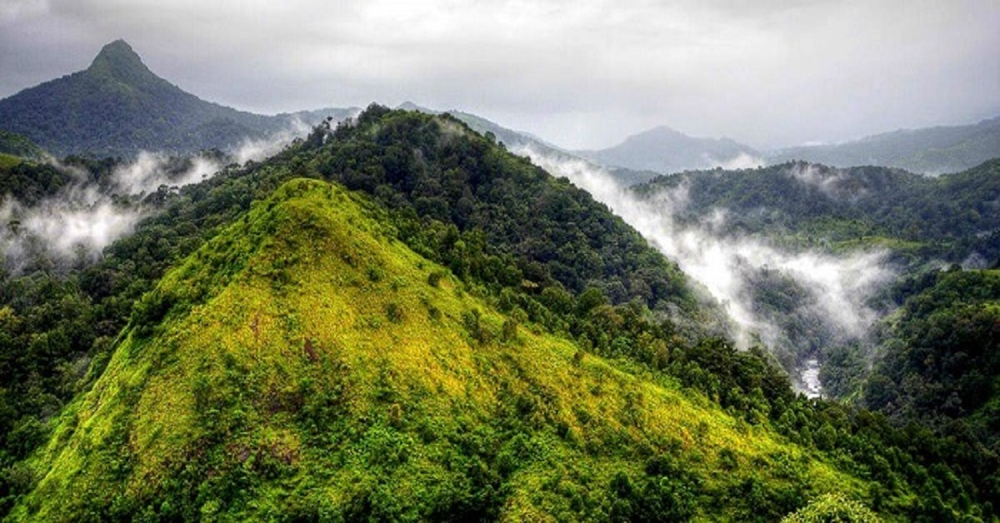

PLACES TO VISIT IN PALAKKAD
Tipu Sultan's Fort
The fort built in 1766 by Hyder Ali is one of the well preserved forts of Kerala. The fort was captured by the British in 1784. It was later taken by the troops of the Kozhikode Zamorin but was recaptured by the British again in 1790. Tipu Sultan did not give up easily and he fought continuously for the custody of the fort. However, during one such encounter he lost his life. Since then the fort is known as Tipu Sultan’s Fort.
Varahamoorthi Kshethram
The legend behind this temple is what makes it special. According to the myth, Perumthachan, an expert carpenter began constructing this temple after being challenged to build a temple that could challenge heaven. Lord Indra truly got envious of the temple and altered minute measurements of the temple which in turn would disrupt Perumthachan’s work. This went on for months until an exasperated Perumthachan gave up on the task and decided to end his career as a carpenter. At the temple one can see a measuring scale and axe lieing inserted into a wall of the temple, which has unfinished structures and pillars.
Mayiladumpara Sanctuary
A sanctuary not bound by fence or gate, the Mayiladumpara sanctuary that houses around 200 peacocks allows free access. Though sightings of the peacocks are infrequent during the day, they can be seen moving around during dawn and dusk. The sanctuary is at Nedungathara, about 25 km south of Palakkad.
Malampuzha

There are several places of interest in Malampuzha. Be it the Malampuzha dam built on the River Bharathapuzha or the garden near the dam or Fantasy Park, the water theme park, there is everything you want on a holiday – serenity, fun and excitement. Easily accessible from Palakkad, Malampuzha is a major tourist attraction.
Nelliampathi

Situated about 80 km away from Palakkad, Nelliampathy is a hill station in the Nelliampathy forest ranges. A series of ridges cut off from one another by valleys of dark evergreen forests make this breathtaking hill station all the more special.
Anamudi

Anamudi is the highest peak in the Western Ghats in India, having an elevation of 2,695 metres (8,842 ft). It is a perfect spot for trekking enthusiasts. The grass slopes starting from the plateau make for a considerably easy hike uphill. The first recorded ascent of the Anamudi was by General Douglas Hamilton of the Madras Army on May 4, 1862. However, it is likely that there had been earlier ascents by local people.
Silent Valley National Park

The Silent Valley gets its name from the eerie silence that surrounds this valley because of the lack of cicadas. The habitat of rare species, Silent Valley is at a distance of 80 km from Palakkad. The valley which is a protected area for tigers, lion-tailed macaques, is also inhabited by tribals.
Walayar Dam

25 km away from Palakkad town, the Walayar Dam is located on the border of Kerala and Tamil Nadu. A beautiful place, it is easily accessible to the visitors to and from Tamil Nadu as well. A deer park located 3 km away from Walayar is another attraction
Dhoni Hills
Dhoni, 15 kms from Palakkad, is a fairly long climb, a 3-hour trek from the base of the Dhoni Hills. This reserve forest area with its small yet captivating waterfalls has many tourists all through the year. Dhoni provides trekkers the opportunity to explore its hilly terrains. Its lush green surroundings are a pleasure to watch. Dhoni is also famous for its farmhouse, harbouring hundreds of cattle of Swiss variety.